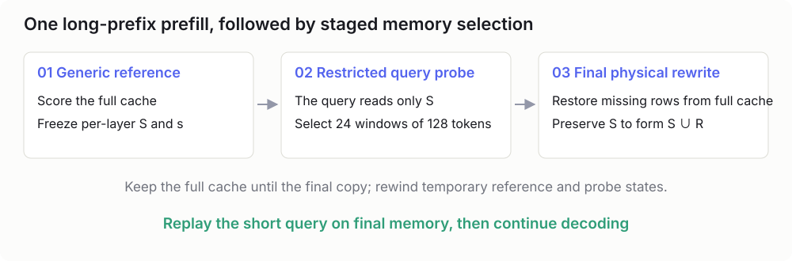
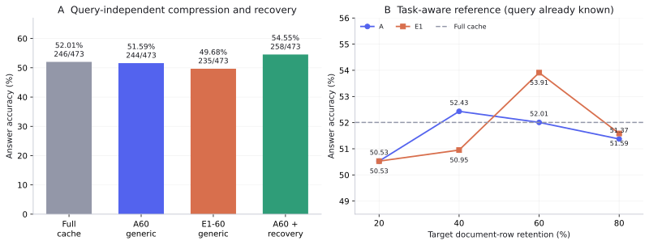
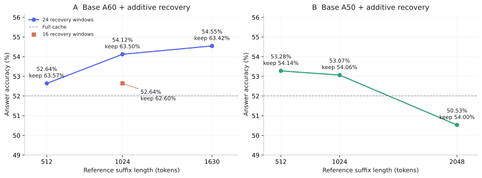

Context Compression for DeepSeek Sparse Attention Architectures
An LLM agent accumulates history as it reads code, calls tools, runs experiments, and processes their results. A short initial request can become a long sequence of constraints, plans, file contents, errors, repairs, and intermediate findings. Eventually, the agent must make room for new information to continue working within its available context capacity.
This is the setting for auto compact: automatically reducing the memory occupied by existing context while preserving the state needed for subsequent work. Losing a constraint can change the agent’s future behavior. Losing a tool result can cause it to repeat an operation it has already completed.
Can we compact the model’s KV cache directly, freeing capacity while preserving the information an agent needs to continue its task?
This post examines reference queries, cache selection, and value merging for DSA and MLA, followed by a recovery stage that uses an arriving question to restore local details. Most results use DeepSeek-V4-Flash-0731; the V3.2 implementation helps explain some DSA-specific adaptations.
One current observation is that query-independent A60 scores 244/473 on the retained LongBench-v2 cohort, while query-guided recovery scores 258/473, at a mean final document retention of 63.42%. The recovery configuration uses additional capacity and computation, and its head selection has development-set overlap. These conditions are discussed alongside the results.
Research draft. This post records the method, results, and operating conditions. Current evaluation centers on long-context question answering; sustained interactive agent tasks remain a priority for further evaluation.
1 What Auto Compact Should Remember
1.1 A running task has several kinds of state
An agent’s history contains user requirements, actions already taken, externally observed facts, and unresolved questions. Their future importance differs. Hundreds of installation-log lines may admit substantial reduction, while an instruction such as “do not upload to GitHub yet” must continue to govern subsequent actions.
Given a processed history H, we want a smaller memory M(H) that preserves useful behavior after subsequent input U arrives:
p_\theta(y\mid M(H),U)\approx p_\theta(y\mid H,U).
Here, U can be a new user instruction, a tool response, or another stage of the task. A reusable memory must support inputs that are not fully known when compaction occurs.
1.2 Text summaries and cache memory
One approach summarizes the history into text and uses that text as new context. Such memory is readable, inspectable, and easy to save between sessions. Another approach retains a compact KV cache that subsequent tokens can access directly.
This project explores cache memory. Method A keeps selected original cache rows; E1 also merges value information. The resulting state depends on the model, quantization format, and inference backend, so transferring it between models requires additional compatibility work.
Fast KV Compaction via Attention Matching develops a framework for constructing compact caches through attention matching. This implementation draws on that framework and adapts selected ideas to sparse routing and MLA’s shared latent representation. A and E1 below refer to the particular definitions used here.
1.3 Known questions and unknown future inputs
When the downstream question is already available, a compressor can prioritize information relevant to that question. Auto compact also needs to operate before the next instruction has arrived.
We therefore distinguish task-aware reference construction, which includes the real question, from generic document study, which uses the document and a general study instruction. The latter approximates reusable memory construction. Once a real question arrives, a recovery stage can supplement that memory with local details.
2 Why Compact a Sparse Attention Cache
2.1 Sparse access and total storage
DSA uses an indexer to select candidates for the current query, followed by main attention over those candidates. The DeepSeek-V3.2 model description identifies sparse attention as a component of its long-context efficiency.
Sparse access limits how many positions participate in each main-attention step. Historical cache rows still provide the candidates for future steps. Compaction reduces the physical cache that remains available and keeps the main-attention and indexer layouts consistent.
The distinction matters for memory quality. Once a row has been removed, it cannot directly participate in a later query’s attention. Recovering it requires retaining a source elsewhere.
2.3 V4 has heterogeneous native rows
The local V4 implementation includes C4 layers with one long-term cache row per four raw tokens and C128 layers with one row per 128 raw tokens. The scheduler tracks lengths in raw-token units.
A rewrite must expose a common scheduler-visible length while retaining different exact row counts for different layer types. The current plan uses 256-token alignment and preserves boundary rows that do not lie completely inside the document. A target such as 60% document retention consequently differs slightly from the realized retention.
3 Constructing Reference Queries
3.1 Collecting Q through an additional forward pass
The importance of a cached position depends on the queries that will access it. A detail ignored during ordinary narration may become essential when a later question asks for a precise date or a local code behavior.
A reference pass processes a suffix after the document and collects the resulting Q vectors at each layer. These vectors measure routing frequency and attention contribution over the original cache, producing scores for selection.
The generic suffix contains a document-study instruction, a chat-template tail, and tokens sampled at evenly spaced positions across the document. The instruction asks the model to attend to central claims, entities, relationships, numbers, exceptions, and easily missed details.
The document portion is assembled directly from existing token IDs. It does not require autoregressively generating a summary; it provides a controlled set of forward-pass probes.
3.2 Relating the Q budget to retained rows
Let B be the document budget-block size and \rho the target retention. A block retains approximately t=\operatorname{round}(\rho B) positions, with reference budget
n=\left\lceil\lambda t\right\rceil,\qquad\lambda=2.5.
For A60, B=1024, t=614, and n=1535. The default suffix contains a 93-token study instruction, a two-token template tail, and 1535 sampled document tokens: 1630 tokens in total. The scorer selects 1535 reference Q positions evenly across that suffix1.
Note 1
Suffix length and scoring-Q count are distinct. The default 1630-token suffix supplies 1535 scored Q positions. Fixed-length 512, 1024, and 2048 suffix experiments score every reference position. The 1024-token document block distributes retention quotas across the entire document.
3.3 Coverage remains approximate
A generic reference approximates future access patterns. A low-scoring passage may still matter for an unfamiliar question, particularly when it contains a rare entity, code detail, or implicit condition.
This motivates combining broad memory construction with selective recovery after a concrete question becomes available.
4 Cache Selection and Value Merging
4.1 A selects representatives within each block
The V3.2 implementation combines root-mean-square main-attention importance with the square root of indexer selection frequency, normalizing each component before adding them. The V4 C4 path combines accumulated main-attention mass and routing counts after separate normalization. Its C128 path uses main-attention mass.
For a V4 C4 row j, let m_j be its accumulated reference attention mass and r_j its routing count. The proxy score used for base selection is
s_j=\frac{m_j}{\sum_km_k+\epsilon} +\frac{r_j}{\sum_kr_k+\epsilon}.
Each document block corresponding to 1024 raw tokens receives a proportional retention quota. High-scoring rows are selected within that block, ensuring coverage across document positions rather than allowing a few regions to consume the entire budget.
Let S_\ell denote a layer’s selected set. A preserves its original rows and moves them into a compact physical layout in their original order. Different layers can select different contents while satisfying the required common length.
4.2 E1 merges values while retaining key scoring
E1 uses the same selected positions. Each source position is assigned to the nearest retained representative by position within its block, and the representative receives an attention-mass-weighted value average.
For cluster C_j, original values v_i, and reference masses m_i,
\bar v_j=\frac{\sum_{i\in C_j}m_i v_i} {\sum_{i\in C_j}m_i+\epsilon},\qquad \Delta v_j=\bar v_j-v_j.
A cluster with negligible mass falls back to the original representative. The key-dependent cache remains unchanged, while separate pages store \Delta v_j. With probabilities \alpha_j(q) derived from retained keys, the correction is
o_{\mathrm{E1}}(q)=o_{\mathrm{A}}(q)+\sum_{j\in S}\alpha_j(q)\Delta v_j.
V3.2 performs this operation in latent value space; V4 uses its native cache-value representation and quantized write path. This implements the specified merged-value computation. Approximation to full-context attention still depends on selection, merging error, and the queries encountered later.
4.3 Retained-row ratio is only one cost measure
E1 requires delta pages and attention correction. A60 and E1-60 consequently share a base candidate-row budget, while their total cache bytes differ.
For an agent, the relevant comparison includes task quality, remaining capacity for new tokens, total held blocks, and additional latency. These costs determine whether value merging is useful in practice.
5 Making the Cache Rewrite Usable
5.1 Update both cache streams and the scheduler
Selected indices must become a state from which normal generation can continue. The implementation moves main and indexer rows consistently, rewrites scheduler and Model Runner block tables, and returns unneeded tail pages to the pool.
Rows are copied forward in bounded chunks. Original-order selection ensures that destinations do not overwrite unread source rows. E1 reserves its delta pages separately from the preallocated pool and keeps them disjoint from every live source-request page during rewriting.
Because vLLM preallocates its pool, returning blocks need not reduce the process’s GPU-memory reading. Request-held blocks, returned blocks, and remaining pool capacity measure the resulting headroom more directly.
5.2 Preserve original positional coordinates
Compaction changes physical addresses while retained rows still originate from different historical positions. The implementation maintains the mapping required for logical causality and RoPE.
A token originally at position 10,000 may move to physical position 6,000. Its original positional meaning and its new storage address must remain consistent with subsequent queries.
Freeing physical capacity and extending the model’s positional range are separate concerns. Original coordinates continue growing as more history arrives. The streaming experiment below explicitly prepares a larger position-lookup capacity; task quality at those positions still requires evaluation.
5.3 Rewind temporary reference and probe state
Reference and probe passes create temporary cache and sliding-window state. Those states are rewound before formal answering. The real query is then replayed on the final cache.
“One long-prefix prefill” thus includes additional short forwards: the reference pass and two passes over the short query. It avoids recomputing the entire long document while retaining the costs necessary for scoring and probing.
6 Recovering Details After a Question Arrives
6.1 Freeze generic memory before probing
The recovery pipeline first computes query-independent scores s_\ell and selections S_\ell over C_{\mathrm{full}}, then freezes both. A real-query probe reads only the logical view corresponding to S_\ell. The single-compaction experiment temporarily keeps the full cache until one final physical rewrite.
Probe signals therefore come from the visible compressed memory. Excluded rows are not read to score themselves. Once recovery regions have been selected, missing content is restored from the retained full-cache source.

6.2 Read window signals from four MLA heads
The configuration uses global heads L20-H5, L20-H30, L20-H31, and L26-H58. Attention signals are aggregated into windows of 128 raw tokens.
For head h, query position q, and window w, sum native probabilities over visible rows in that window:
a_{h,q,w}=\sum_{j\in S_\ell\cap w}\alpha_{h,q,j}.
Normalization includes the actual routed C4 rows, causal sliding-window attention, and the attention sink. Reconstructed outputs are checked against the native kernel to avoid treating locally normalized proxy scores as the probabilities used by the model.
For each head and window, average the five largest values over the complete query, using all positions if fewer than five exist. Z-normalize each head across available windows, then average equally across heads:
u_{h,w}=\operatorname{MeanTop5}_{q}(a_{h,q,w}),\qquad g_w=\frac{1}{4}\sum_h\operatorname{Z}_{w}(u_{h,w}).
The highest-scoring 24 windows define recovery region R, covering at most 24\times128=3072 raw tokens. A window without any surviving representative cannot be located directly using these retained-row signals.
6.3 Additive and fixed-budget restoration
Convert R into the native row set R_\ell for each layer. Additive recovery keeps the original selection and inserts missing rows:
S'_\ell=S_\ell\cup R_\ell.
A common scheduler length requires alignment across heterogeneous layers. Remaining slots are filled with high-scoring original rows, so the physical addition depends on actual missing rows and is not simply 3072 tokens.
Fixed-budget recovery inserts the missing rows and removes an equal number of low-scoring rows from S_\ell\setminus R_\ell, using the frozen original scores:
S'_\ell=(S_\ell\cup R_\ell) \setminus\operatorname{BottomK}_{s_\ell}(S_\ell\setminus R_\ell).
This preserves base row counts, but the displaced rows may matter for later tasks. All recovery results reported below use the additive policy. Fixed-budget recovery remains implemented; numerical results for it are not reported here.
6.4 Recovery needs a surviving source
The single-compaction pipeline retains C_{\mathrm{full}} until materialization. Multi-round streaming instead archives actual native cache rows to CPU. The query locates a region; the retained source supplies content that has left the GPU.
A discarded row cannot reappear through a set-union operation without such a source. CPU cache, original tool records, and retrieval-based memory are possible directions for persistent agents, with their storage and access costs included in the system budget.
7 Single-Compaction Results
7.1 Dataset and evaluation conditions
LongBench-v2 has 503 multiple-choice questions covering six long-context task families. This section uses the 473 questions that fit the current V4 encoding and generation reservation. The other 30 are evaluated separately below.
Natural documents are neither repeated nor truncated in this cohort. Document lengths range from approximately 10,137 to 1,045,112 tokens, averaging 137,731. Inference uses DeepSeek-V4-Flash-0731, TP4, thinking disabled, greedy decoding, and a maximum of 192 generated tokens.
Correctness requires an explicitly parsed multiple-choice answer. Settings share question IDs, document lengths, and expected answers; counts below are recomputed from per-question records. Different templates, reasoning modes, or generation budgets make direct comparison with public leaderboard numbers inappropriate.
The head-discovery set contains 156 questions, including 68 that overlap with this 473-question cohort. The recovery configuration is therefore an exploratory development result rather than a fully independent held-out evaluation. Per-query recovery does not use gold answers, but head selection has not yet been validated on an entirely separate cohort2.
Note 2
Answer-blind per-query selection and independent hyperparameter selection are distinct conditions. The first holds here. The discovery set also includes 88 BrowseComp-Plus questions; its remaining 68 LongBench-v2 questions overlap with this evaluation.
7.2 Generic memory and query-guided recovery
| Setting | Correct | Accuracy | Mean document retention |
|---|---|---|---|
| Full cache | 246 / 473 | 52.01% | 100% |
| Generic A60 | 244 / 473 | 51.59% | 60.27% |
| Generic E1-60 | 235 / 473 | 49.68% | 60.27% + delta |
| Generic A60 + 24-window recovery | 258 / 473 | 54.55% | 63.42% |
Retention is the arithmetic mean of per-question document-retention ratios and excludes E1’s extra delta bytes. Default recovery uses the 1630-token reference and scores 14 more questions correctly than generic A60, a gain of 2.96 percentage points.
Paired outcomes show 42 wrong-to-right changes and 28 right-to-wrong changes relative to generic A60. Recovery improves the aggregate while also disturbing some previously correct answers. This motivates studying when to trigger it and how to detect unreliable recovery signals.
Recovery also scores 12 more questions correctly than full cache. Selection, extra probing, and development-set tuning all contribute to this comparison, so it does not establish a general reasoning benefit from compaction.

7.3 Task-aware A/E1 comparisons
When the real question is included in the reference, results are:
| Target document retention | A correct | A accuracy | E1 correct | E1 accuracy |
|---|---|---|---|---|
| 80% | 243 | 51.37% | 244 | 51.59% |
| 60% | 246 | 52.01% | 255 | 53.91% |
| 40% | 248 | 52.43% | 241 | 50.95% |
| 20% | 239 | 50.53% | 239 | 50.53% |
E1 outperforms A at 60% but underperforms it at 40%. Generic E1-60 also scores below generic A60. Merging depends on how the reference, selected representatives, and later queries align; it does not guarantee improved task scores.
7.4 Changes differ by task family
| Task family | Questions | Full cache correct | Generic A60 correct | A60 + recovery correct |
|---|---|---|---|---|
| Single-document QA | 175 | 85 | 84 | 94 |
| Multi-document QA | 124 | 59 | 61 | 64 |
| Long in-context learning | 74 | 51 | 44 | 47 |
| Long-dialogue history | 39 | 17 | 18 | 19 |
| Code repository understanding | 31 | 17 | 19 | 18 |
| Long structured data | 30 | 17 | 18 | 16 |
Most observed recovery gains come from document QA. Code and structured-data tasks do not improve consistently. A possible explanation is that local windows more readily restore concentrated evidence than distributed rules or cross-file relationships. Failure-case analysis and additional recovery methods are needed to test that interpretation.
8 Reference Length and Recovery Budget
8.1 A60 suffix and window sweeps
Holding other main settings fixed gives:
| Total reference length | Recovery windows | Correct | Accuracy | Mean final retention |
|---|---|---|---|---|
| 1630 | 24 × 128 | 258 | 54.55% | 63.42% |
| 1024 | 24 × 128 | 256 | 54.12% | 63.50% |
| 1024 | 16 × 128 | 249 | 52.64% | 62.60% |
| 512 | 24 × 128 | 249 | 52.64% | 63.57% |
Shortening the reference from 1630 to 1024 reduces the correct count by two in these runs. At length 1024, reducing recovery from 24 to 16 windows reduces it by seven. Additional windows also increase retained capacity, so this comparison includes both memory size and recovery quality.
Each suffix independently produces its own S and s. A reference change affects initial selection and the memory visible to the later probe; its effect cannot be isolated to the number of Q vectors alone.
8.2 Longer references are not uniformly better at A50
With 50% base retention and 24 recovery windows:
| Total reference length | Correct | Accuracy | Mean final retention |
|---|---|---|---|
| 512 | 252 / 473 | 53.28% | 54.14% |
| 1024 | 251 / 473 | 53.07% | 54.06% |
| 2048 | 239 / 473 | 50.53% | 54.00% |
All reference positions are scored, and lengths include the 95-token instruction and template overhead. These runs do not show a monotonic quality benefit from longer references. More Q vectors alter selection scores and may amplify access patterns that are less useful for the downstream task. Distinguishing those effects requires examining selections and errors more closely.

9 Compaction Costs
9.1 Stage times for single compaction
Default A60 plus 24-window recovery has these mean times across 473 questions:
| Stage | Mean time |
|---|---|
| Long-prefix prefill | 7.90 s |
| Reference forward + base scoring | 0.88 s |
| Restricted query probe | 3.20 s |
| Recovery-window selection | 0.02 s |
| Final physical rewrite | 1.77 s |
| Final short suffix to first token | 0.25 s |
| Subsequent decoding | 11.78 s |
| Full pipeline wall time | 26.94 s |
The pipeline additionally includes rewinds, synchronization, integrity audits, and some artifact handling; stage rows are not an exhaustive additive decomposition. Base scoring’s approximately 0.62 seconds of CUDA time is already included in the 0.88-second reference-and-scoring row.
The query probe and physical rewrite are material costs. Decode performance also depends on output length, cache type, and kernel paths. These records do not establish an overall request-speed improvement.
9.2 Agent costs span subsequent steps
One compacted memory may support many later steps. Its initial cost can be amortized if it avoids future computation or repeated history processing. Conversely, frequent compaction and recovery can increase total latency even while keeping memory within capacity.
An agent cost model should include trigger frequency, subsequent accesses, archival and recovery work, and repeated actions caused by lost information. The current QA measurements provide a basis for measuring individual operations.
10 Multi-Round Streaming Beyond a Single Window
10.1 Read, compact, and append
The separate over-capacity cohort contains 30 questions with full documents of approximately 1.10 million to 4.64 million tokens, averaging 2.00 million.
Streaming reserves capacity for references, the question, generation, and safety margin. When the active physical prefix reaches its threshold, it applies query-independent A60, returns pages, and continues reading unseen source tokens. An under-capacity final tail is kept without an additional terminal A pass.
Recorded questions trigger one to nine compactions. Every source document token receives one document forward pass. Later tokens attend to the memory produced by earlier rounds, so the resulting cache also differs from a hypothetical full-document forward pass without intermediate compaction.
10.2 CPU archives support final restoration
Actual native rows are archived on CPU with their original coordinates. The real question arrives only after document reading finishes and probes the current physical GPU memory. The selected 24 windows are then restored from the archive.
This bounds active GPU-cache capacity while allowing the CPU archive to grow with history. It represents one form of hierarchical memory with a small active state and a larger recoverable past.
10.3 Results on 30 over-capacity questions
The control keeps equally sized head and tail token spans, removes the middle, and preserves the question exactly.
| Setting | Document access | Correct | Accuracy | Mean pipeline time |
|---|---|---|---|---|
| Head/tail truncation | Head and tail within one window | 17 / 30 | 56.67% | 124.52 s |
| Multi-round A60 + final recovery | Complete streaming document | 16 / 30 | 53.33% | 352.83 s |
The implementation consumes full over-capacity inputs under bounded active-cache capacity. On these 30 questions, it does not outperform head/tail truncation and takes substantially longer. Streaming reads more content, so the timing difference includes additional reading as well as memory-maintenance work.
Mean CPU archival copying takes 9.92 seconds, intermediate physical rewriting 59.44 seconds, and final cache restoration 3.09 seconds. Position-lookup capacity is explicitly extended as well. Multi-round execution, memory quality, and sustained throughput therefore remain separate optimization targets.
11 Toward Sustained Agent Tasks
11.1 Trigger policies and protected capacity
A candidate integration triggers compaction near an active-cache threshold while reserving space for tool results, probes, and generation. User constraints, current plans, recent actions, and important tool conclusions may benefit from explicit protection. Existing experiments protect non-document instructions and suffixes; they do not implement those finer agent-state policies.
An available question can trigger recovery when the budget permits. Before such a question exists, the system maintains generic memory. Triggering and recovery size should account for available capacity and task requirements rather than always applying an identical restoration budget.
11.2 Forgetting can accumulate across rounds
Information lost in one round can remain absent from all subsequent references. A CPU archive preserves a source, but retained-row probe signals may still fail to identify the needed region.
Further work should study memory-age budgets, explicit protection of critical state, and retrieval from original text or tool history. Single-compaction QA accuracy alone cannot establish behavior after many compactions.
11.3 What to evaluate next
The next priority is evaluation on real multi-step tasks: whether constraints persist, completed operations are repeated, cross-file debugging loses dependencies, and task completion changes after successive compactions. Comparisons should include textual summarization, truncation, pure A, E1, and cache memory with external recovery under comparable actual capacity and computation budgets.
Heads and budgets should be selected on an independent discovery cohort and frozen before evaluation on new tasks. Current measurements justify further exploration of the approach. The longer-term objective is memory that lets agents continue reliable work under capacity constraints.
12 Data and References
Counts, domain results, retention ratios, and stage times are recomputed from per-question records. Download the aggregate figure data and source checksums. Retention means are computed per question; figures have no repeated-run confidence intervals.
- Fast KV Compaction via Attention Matching: the cache-compaction framework informing this adaptation.
- DeepSeek-V3.2 model description: DSA background.
- Official LongBench-v2 repository: task definitions and dataset description.